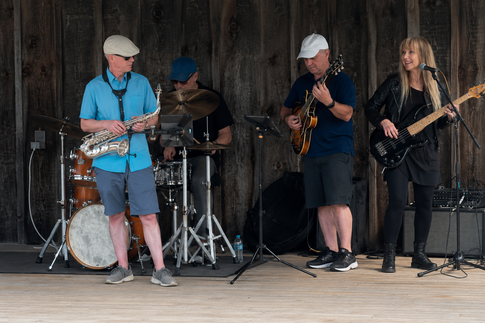

QuartetTake Your Time Quartet
A smaller, conversational combo focused on melody, swing, and space. The quartet format is ideal for coffee shops, receptions, community events, listening rooms, and daytime performances.
Typical instrumentation: saxophone, guitar, bass, and drums.

The Take Your Time Quartet performing live in the Twin Cities.